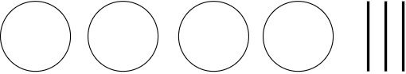
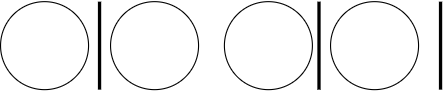
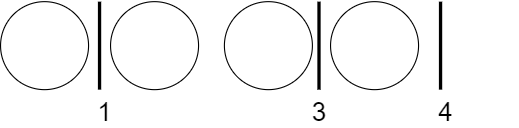

ABC165
1. A問題
入出力の受け取り：B以下A以上にkの倍数が見つかるか見つからないかなので、AからBの間にkの倍数があるか調べればいい。また、解説pdfにある通り、B以下の最大のkの倍数を求め、それがA以上であるかと判断すれば解答できる。(1)
参考：
(1) 解説pdf
2. B問題
全探索：この問題は入力を見ると一見間に合わなそうだが、sampleを見るとで答えがであることより、十分間に合うことが分かる。単純に1%を足していけば答えとなる。
3. C問題
順列、DFS：この問題は、基本的な考え方は一緒だが実装によって2通りある。
3.1. 考え方
この問題の共通している考え方について解説する。
この問題は、いかに効率よくすべての数列を列挙するかが大切である。これからその方法を考える。まずはm = 4 , n = 3として考えてみよう。図のようにmをボール、nを棒として考えて見る。

次に4個のボールと、3個の棒を適当に並び変えてみる。

するとこんな感じになる。次に、棒より左にあるボールの数を数えてみる。

数列の中の1つを表現していることが分かるだろうか？何が言いたいかというと、これらのボールと棒の並び方は、数列の中の1パターンを表現している。これらのボールと棒の並び方は、数列のどれかと1対1対応しており、このボールと棒の並び方を考えればよい。その並び方は、となる。つまり、m+nの場所にn本の棒の置き方である。計算量はで入力より、最低でも(184756 ※google検索やwolfram alphaなどで20 choose 10とすれば出てくる)なので間に合いそうである。※数列を列挙するための計算量、実装の仕方で最悪計算量は少し変わる。(後述)
数列をうまく列挙出来たら、あとは各条件に合うかどうかを調べるだけなので、数列の生成に、条件について調べるのが、最終的にとなる。
3.2. next_permutaion での実装
数列を作成するために、next_permutaionを利用して実装する。※next_permutaion とは配列の中身を元に辞書順の次の順列を生成する関数 next_permutaionについて ボールと棒はそれぞれ0と1で表現することが可能で、1が来るまでの0の個数を利用すれば上の考え方と同じそうに数列を生成することができる。しかし、この実装では、が0のときも探索してしまうので、注意が必要。最悪計算量はとなる。（参考１）
3.3. DFS での実装
数列を作成するために、DFS（再帰関数）を利用して実装する。始めに要素0の配列を準備し、その末尾に1を追加し、その末尾をインクリメントしていくことで数列を生成していく。とりあえず、ソースコードを見たほうが分かると思う。それでもわからなければDFSするごとに配列の大きさを出力したり、実際に紙に書いてみると分かると思う。この実装ではが0のときを考慮しないので最悪計算量はとなる。始めに入れた1は、インクリメントされないので注意。（参考２）
参考：
(2) 公式解説放送
4. D問題
数学：この問題は数学的考察を行うと簡単に解くことができる。まずは、小数部分と整数部分で分けてみる。今回は、次のように考察していくとうまくいく。
N := の整数部分、M := の小数部分とする。
が成り立つ。
これより、 であり、である。
AとNは整数なので となる。
以上より、
以上の考察より、この問題はMの最大化を考えればよくその最大のMは のときである。しかし問題の制約より、n以下であることが必要である。上の考察でも分かる通り、 は広義単調増加関数なので、もしも、nがB-1以下であればnのときが最大となる。
以上をまとめると のときが答えである。(1)
このように、床関数(floor()または、 )やガウス記号([ ])のときは、不等式を考えるか、その中身の整数部と小数部に分けて考察するとよい。
参考：